faltung is a set of eighteen instruments and effects for the sound of 2000s minimal and microhouse — Perlon, [a:rpia:r], Villalobos, the Romanian
labels — and for the bass of early dubstep and neuro. Everything is synthesized or processed live; there are no sample libraries.
The drums come twice: as kt1 kit, a drum machine with eight voices and a sequencer, and as eight single modules (bd1 … tm9) that
you play from a midi clip or a drum rack. They share one synthesis engine, so a sound you design in a module behaves identically in the kit.
The processes are the effects that make that music move: micro-sampling, dub echo, small rooms, groove, the dj filter and bus glue.
wb1 wub is a bass synth for wobbles, formants and reese, and ms0 master a linear-phase mastering bus.
The look follows record sleeves of the period — Mark Fell's flat colour fields and wireframe solids, snd's folded pastel strips, Oval's coloured
lines, stdio's chevrons and tracklists. The pictures are not decoration: they are drawn from the current settings and move as you play.
To reinstall after building from source, run scripts/install-mac.sh in the faltung folder. In Ableton Live, open
Settings → Plug-Ins, make sure Use VST3 Plug-In System Folders (or Audio Units) is on, and press Rescan. The plug-ins appear
under FreakiePie as faltung kt1, faltung bd1 and so on. The drum machines, modules and wb1 are instruments; mc3 … gl8 are audio effects.
In the standalone apps there is no host clock: switch on run in kt1 or kt2 to start the internal sequencer, and set the tempo with internal bpm.
Choose the audio and midi devices with the options button at the top of the window.
using the controls
control
how
slider
a label, a thin rule, a slanted bar and a white edge mark. Drag left/right (or up/down) anywhere on it. shift-drag for fine moves,
double-click for the default, scroll wheel for small steps. Bipolar controls (pan, shift, offsets) fill from the centre.
choice
click for a menu; drag up/down to step through.
toggle
the small parallelogram; filled = on.
presets
top right: < and > step through, click the name for the list. A preset sets every control; anything it does not
mention returns to its default. The same list appears in the host's program menu.
picture
in the modules, click the picture to play the sound (hh4: left half closed, right half open). In kt1 click a strip; in kt2 click a slice.
size
drag the bottom-right corner; the window scales between half and double size.
Hover over any control for its full name.
automation in ableton
Every control in every faltung plug-in is a host parameter, with a fixed id and a readable name, so nothing has to be "configured" first.
In Arrangement view, show the automation lane of the track, choose the device in the first chooser and the control in the second —
or simply move the control while recording automation. All moves are smoothed in the audio engine, so automation never zips or clicks.
In kt1 the names start with the voice: bd1 decay, rm3 tune, hh4 length, cp6 mute. That is 134 parameters, sorted by voice.
pattern (a1–a8) is a parameter: automate it to arrange a whole track from one kt1 or kt2.
Track mute, length, probability and shift are parameters: thin a groove out, or push the hats later, over 32 bars.
In sw6 each of the sixteen step offsets is a parameter (step 1 … step 16).
In wb1 automate wobble rate to change the wobble speed per note, the way the early dubstep tracks were written.
Step patterns themselves (which steps are on) are saved with the set, not automated — use patterns a1–a8 for changes.
midi
plug-in
notes
kt1
C1–G1 (36–43) play bd1, sd2, rm3, hh4, oh5, cp6, pc7, cl8 — the bottom row of a Push or a drum rack. The sequencer follows the host transport.
kt2
C1 and up play slices 0, 1, 2 … The sequencer follows the host transport.
modules
any note plays. With key tracking on the pitch follows the note (C3 = as tuned). hh4: A# notes (A#1 = 46, A#2 = 58 …) play the open hat, all others closed; closed chokes open.
wb1
notes, pitch bend (range set by bend range), mod wheel (cc 1, its job set by mod wheel), all-notes-off.
Ableton numbers middle C as C3; faltung uses the same names.
drum machines
kt1 kit · kt2 loop
kt1 kit
Eight synthesized voices and a 16-step sequencer built for the loose, shuffled grooves of 2000s minimal: every step can sit early or late, play only sometimes, or ratchet; every track can run its own length, so patterns phase against each other.
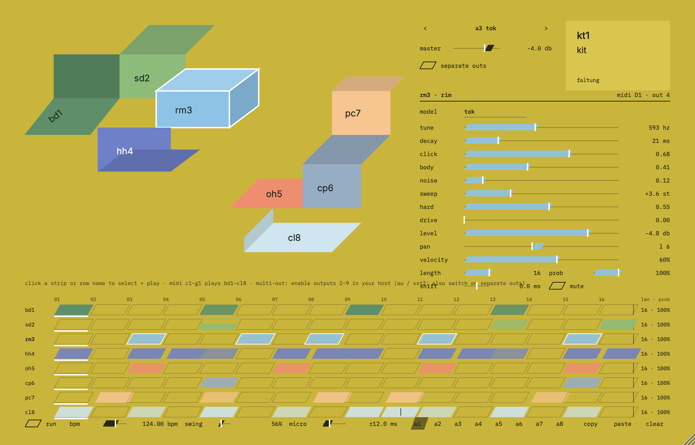
the page
Top left, the eight voices as folded strips. Click one to select it and hear it; it flashes on every hit. Right, the selected voice:
its model and eight sound controls (the same as the matching module), level, pan and velocity, then its track settings — length, probability,
shift and mute. Bottom, the step grid with a white bar under each track's current step, and the global row: run, internal bpm, swing,
micro range, the pattern tabs a1–a8 and copy / paste / clear.
the voices
voice
engine
midi
output
bd1
kick
C1
2
sd2
snare
C#1
3
rm3
rim
D1
4
hh4
hat (closed, chokes oh5)
D#1
5
oh5
hat (open)
E1
6
cp6
clap
F1
7
pc7
perc
F#1
8
cl8
click
G1
9
editing steps
gesture
does
click
step on / off
drag up / down on a step
velocity — shown as the strength of the colour
drag across
paint steps on (or off, if you started on a lit step)
shift-drag
microtiming: the step moves early or late, up to ± the micro range; you see it shift sideways
alt-click
probability 100 → 75 → 50 → 25%: the step is drawn partly filled
Steps past a track's length are dimmed. Give tracks different lengths — hats 16, rim 15, perc 12 — and the pattern slowly turns over itself,
which is most of the trick of long minimal grooves. The factory patterns already place offbeat hats and percussion a little late and some rims early.
separate outputs in ableton
kt1 has a main stereo output and eight more, one per voice. In Live, put kt1 on a midi track, create audio tracks, set their audio from
to the kt1 track and choose bd1, sd2 … in the second chooser. A voice whose output is in use leaves the main mix.
controls
control
range
default
what it does
run (internal clock)
off / on
off
internal clock (standalone, or when the host is stopped)
internal bpm
60.00 bpm … 180.00 bpm
124.00 bpm
internal tempo
swing
50% … 75%
54%
offbeat 16ths later, 50% = straight
micro range
±0.0 ms … ±40.0 ms
±12.0 ms
how far the per-step microtiming reaches (± ms)
pattern
a1, a2, a3, a4, a5, a6, a7, a8
a1
current pattern a1–a8 — automate it to arrange
master
-24.0 db … +6.0 db
-4.0 db
output level
<voice> model
rim, wood, tok, metal
tok
which engine variant (see the models above)
<voice> tune
180 hz … 2.40 khz
593 hz
pitch of the voice (range depends on the voice)
<voice> decay
8.0 ms … 600 ms
21 ms
length of the voice
<voice> click
0.00 … 1.00
0.68
see the voice's module (rm3: level of the stick itself)
<voice> body
0.00 … 1.00
0.41
see the voice's module (rm3: tilts energy towards the fundamental (low = thin and clacky))
<voice> noise
0.00 … 1.00
0.12
see the voice's module (rm3: a band of noise around the third mode)
<voice> sweep
+0.0 st … +12.0 st
+3.6 st
see the voice's module (rm3: a small pitch fall at the hit)
<voice> hard
0.00 … 1.00
0.55
see the voice's module (rm3: stick hardness: brightness and shortness of the excitation)
<voice> drive
0.00 … 1.00
0.00
see the voice's module (rm3: saturation)
<voice> level
off … 6.0 db
-4.8 db
output level, off … +6 db
<voice> pan
l 50 … r 50
l 6
stereo position
<voice> velocity
0% … 100%
60%
how much velocity changes level and brightness
<voice> length
1 … 16
16
pattern length of the track in steps (different lengths = polymeter)
<voice> probability
0% … 100%
100%
probability multiplier for every step of the track
<voice> shift
-30.0 ms … +30.0 ms
0.0 ms
moves the whole track earlier or later in ms
<voice> mute
off / on
off
silences the track
presets a3 tok · perlon shuffle · bucharest · empty
kt2 loop
A loop slicer. Drop in any break or recording, cut it into slices on a grid or on its hits, and sequence the slices — reversed, re-pitched, gated — the Akufen / early-Perlon cut-up. It starts with a break rendered by kt1.
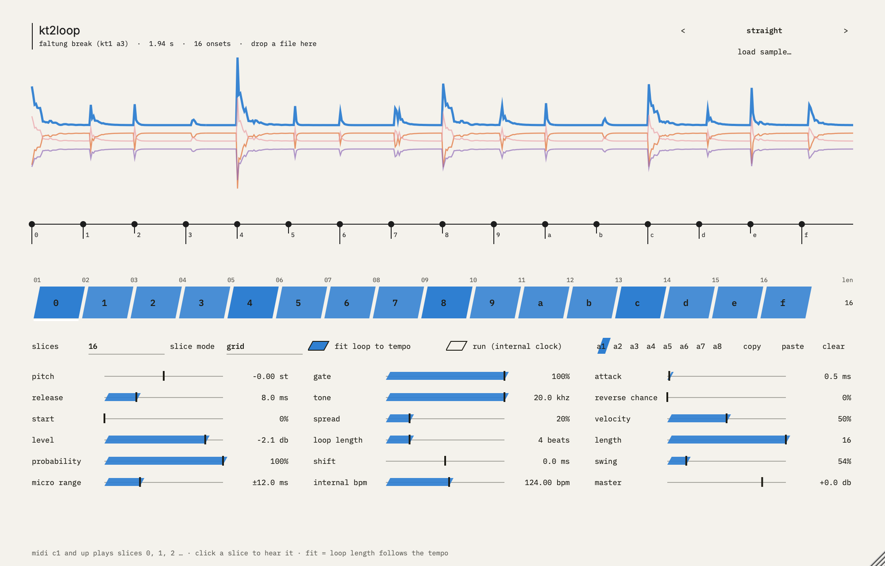
loading
Drag an audio file (wav, aiff, flac, mp3, ogg; up to 60 s) onto the waveform, or use load sample…. kt2 guesses the length in
beats from the current tempo (loop length); correct it if needed. The sample is stored inside the project (up to 40 s), so the set opens on another computer.
slices
The black dots under the waveform are the slice starts, numbered 0, 1 … f. grid cuts equal slices; onsets starts each slice on a
detected hit, which keeps transients intact on loose breaks. Click a slice to hear it.
the step row
Each lit step shows the slice it plays (hex digit). Click to turn a step on (it takes the slice with the same number), drag up/down to choose another slice,
alt-click to reverse (<), shift-drag for microtiming, right-click for ratchets. Slices are monophonic: a new one fades out the last over the release time.
controls
control
range
default
what it does
run (internal clock)
off / on
off
internal clock (standalone, or when the host is stopped)
internal bpm
60.00 bpm … 180.00 bpm
124.00 bpm
internal tempo
swing
50% … 75%
54%
offbeat 16ths later, 50% = straight
micro range
±0.0 ms … ±40.0 ms
±12.0 ms
how far the per-step microtiming reaches (± ms)
pattern
a1, a2, a3, a4, a5, a6, a7, a8
a1
current pattern a1–a8 — automate it to arrange
master
-24.0 db … +6.0 db
+0.0 db
output level
slices
4, 8, 16, 32
16
how many slices the loop is cut into
slice mode
grid, onsets
grid
grid: equal slices · onsets: slices start on detected hits
start
0% … 100%
0%
skips the beginning of the loop
pitch
-24.00 st … +24.00 st
-0.00 st
replay pitch
gate
2% … 100%
100%
how much of each slice plays
attack
0.0 ms … 30.0 ms
0.5 ms
fade-in of each slice
release
0.5 ms … 200.0 ms
8.0 ms
fade-out of each slice (also the crossfade when slices cut each other)
tone
300 hz … 20.0 khz
20.0 khz
low-pass on the slices
reverse chance
0% … 100%
0%
chance a step plays reversed
spread
0% … 100%
20%
random stereo placement per hit
level
off … 6.0 db
-2.1 db
output level
velocity
0% … 100%
50%
velocity sensitivity
fit loop to tempo
off / on
on
replay speed follows the host tempo
loop length
1 beats … 16 beats
4 beats
how many beats the loop is (set automatically when you load)
length
1 … 16
16
pattern length of the track in steps (different lengths = polymeter)
probability
0% … 100%
100%
probability multiplier for every step of the track
shift
-30.0 ms … +30.0 ms
0.0 ms
moves the whole track earlier or later in ms
mute
off / on
off
silences the track
presets straight · cut-up · stutter · sparse
the drum modules
bd1 kick · sd2 snare · rm3 rim · hh4 hats · cp6 clap · pc7 perc · cl8 click · tm9 tom
the drum modules
Each module is one kt1 voice as its own instrument, for drum racks, midi clips and separate processing. Every engine has four models and
the same eight macro controls in the same places — tune, decay, a transient, two tone controls, a pitch sweep, a tone/shape control and drive —
named for what they do in that engine. All engines are calibrated to similar loudness, so changing models does not jump in level.
Common to every module: level, pan, velocity (how much velocity changes level and brightness), key tracking and choke.
The picture at the top plays the sound when clicked.
bd1 kick
The kick of minimal is short, dry and pitched. Start from tok, keep decay under 200 ms, add tok for the wooden knock and sub only if the track is otherwise empty below 60 hz.
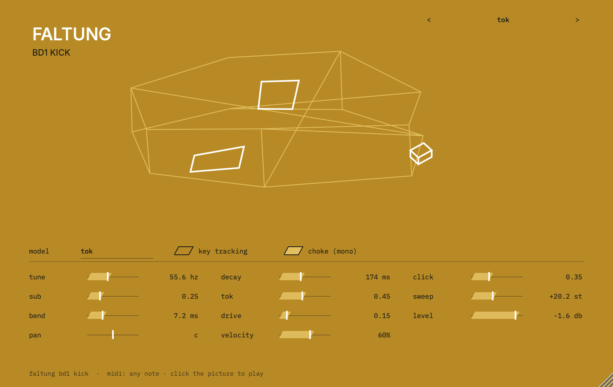
models
tok
tight and dry, strong wooden overtone; the minimal kick
thud
holds its body then lets go: deep, rounded
909
sine pushed towards a triangle with a noisy click
sine
pure sine with a very soft click
controls
control
range
default
what it does
model
tok, thud, 909, sine
tok
which engine variant (see the models above)
tune
30.0 hz … 140 hz
55.6 hz
pitch the body settles on, 30–140 hz
decay
35 ms … 1.60 s
174 ms
length of the body, 35 ms – 1.6 s
click
0.00 … 1.00
0.35
the attack: a filtered noise burst and a short bright ping
sub
0.00 … 1.00
0.25
a sine an octave under the body with a longer tail
tok
0.00 … 1.00
0.45
a wooden overtone well above the fundamental — the dry Perlon "tok"
sweep
+0.0 st … +48.0 st
+20.2 st
how far the pitch falls at the start, up to 4 octaves
bend
2.0 ms … 140 ms
7.2 ms
how fast it falls, 2–140 ms
drive
0.00 … 1.00
0.15
saturation after the engine (anti-aliased tanh)
level
off … 6.0 db
-1.6 db
output level, off … +6 db
pan
l 50 … r 50
c
stereo position
velocity
0% … 100%
60%
how much velocity changes level and brightness
key tracking
off / on
off
notes change the pitch (c3 = as tuned)
choke (mono)
off / on
on
a new hit cuts the previous one (mono)
presets tok · perlon thud · 909 short · sub sine · knock
sd2 snare
Snares are rare in minimal; when they appear they are tuned and short. brush with long decay makes the shuffling noise of a lot of Perlon records.
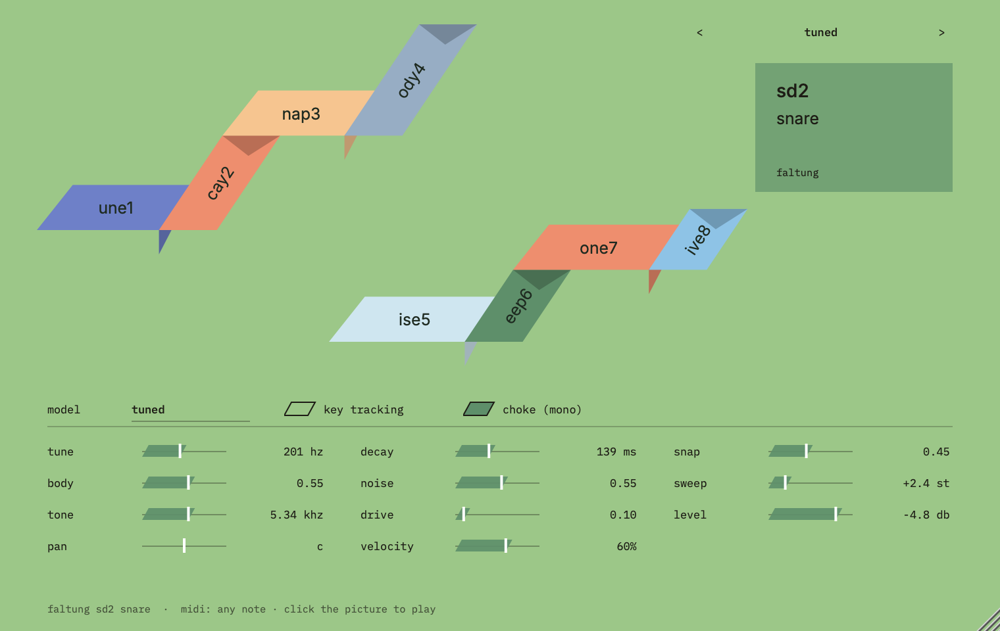
models
tuned
three shell modes and filtered wires
fm
a frequency-modulated shell, cracky
brush
pink-noise wires that swell in, little shell
808
two bridged modes and high-passed noise
controls
control
range
default
what it does
model
tuned, fm, brush, 808
tuned
which engine variant (see the models above)
tune
110 hz … 420 hz
201 hz
pitch of the shell modes, 110–420 hz
decay
40 ms … 900 ms
139 ms
length of the wires (the shell is about half)
snap
0.00 … 1.00
0.45
a bright noise transient
body
0.00 … 1.00
0.55
level of the tuned shell
noise
0.00 … 1.00
0.55
level of the wires
sweep
+0.0 st … +12.0 st
+2.4 st
pitch drop of the shell at the hit
tone
1.80 khz … 13.0 khz
5.34 khz
brightness of the wires
drive
0.00 … 1.00
0.10
saturation
level
off … 6.0 db
-4.8 db
output level, off … +6 db
pan
l 50 … r 50
c
stereo position
velocity
0% … 100%
60%
how much velocity changes level and brightness
key tracking
off / on
off
notes change the pitch (c3 = as tuned)
choke (mono)
off / on
on
a new hit cuts the previous one (mono)
presets tuned · fm crack · brush · 808
rm3 rim
The most important sound of the style. tok with tune around 400–600 hz and hard 0.5 is the Villalobos rim; detune two instances against each other for call and answer.
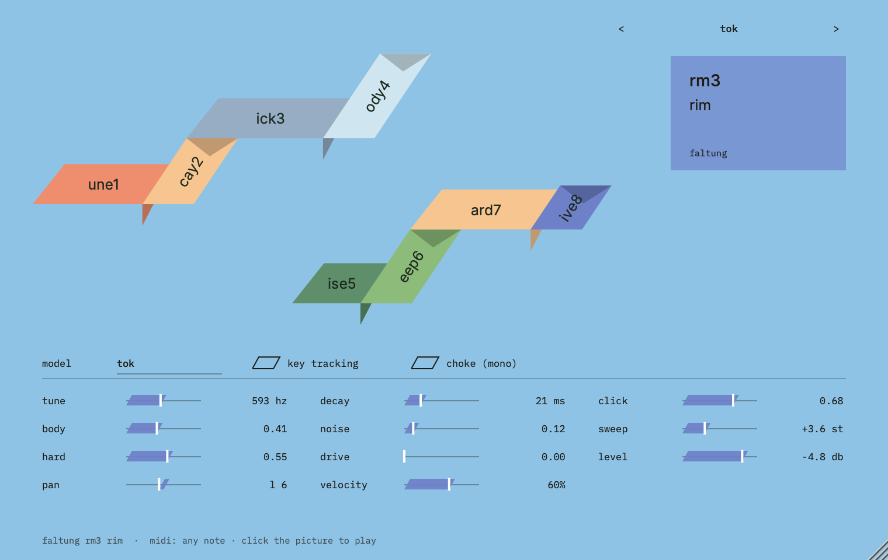
models
rim
rim-shot mode ratios
wood
woodblock ratios, hollow
tok
low and close together: the Villalobos tok
metal
bell-like, long
controls
control
range
default
what it does
model
rim, wood, tok, metal
tok
which engine variant (see the models above)
tune
180 hz … 2.40 khz
593 hz
fundamental of the struck object, 180 hz – 2.4 khz
decay
8.0 ms … 600 ms
21 ms
ring time (higher modes die sooner)
click
0.00 … 1.00
0.68
level of the stick itself
body
0.00 … 1.00
0.41
tilts energy towards the fundamental (low = thin and clacky)
noise
0.00 … 1.00
0.12
a band of noise around the third mode
sweep
+0.0 st … +12.0 st
+3.6 st
a small pitch fall at the hit
hard
0.00 … 1.00
0.55
stick hardness: brightness and shortness of the excitation
drive
0.00 … 1.00
0.00
saturation
level
off … 6.0 db
-4.8 db
output level, off … +6 db
pan
l 50 … r 50
l 6
stereo position
velocity
0% … 100%
60%
how much velocity changes level and brightness
key tracking
off / on
off
notes change the pitch (c3 = as tuned)
choke (mono)
off / on
off
a new hit cuts the previous one (mono)
presets tok · rimshot · woodblock · metal tick
hh4 hats
Closed hats on any note, the open hat on A# notes; the closed hat cuts the open one. open decay sets the open length.
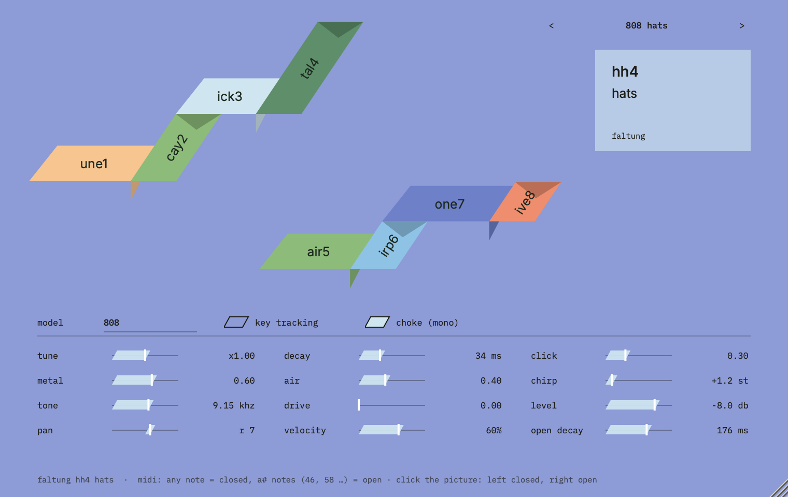
models
808
six band-limited squares at the classic ratios
noise
resonant band-passed noise
ring
an inharmonic fm pair
tick
very short metal
controls
control
range
default
what it does
model
808, noise, ring, tick
808
which engine variant (see the models above)
tune
x0.50 … x2.00
x1.00
scales all six metallic oscillators (x0.5 – x2)
decay
6.0 ms … 1.40 s
34 ms
length (the open hat has its own decay in hh4)
click
0.00 … 1.00
0.30
stick transient
metal
0.00 … 1.00
0.60
level of the square-wave metal
air
0.00 … 1.00
0.40
level of noise
chirp
+0.0 st … +12.0 st
+1.2 st
a falling pitch at the hit
tone
5.00 khz … 15.0 khz
9.15 khz
centre of the band-pass, 5–15 khz
drive
0.00 … 1.00
0.00
saturation
level
off … 6.0 db
-8.0 db
output level, off … +6 db
pan
l 50 … r 50
r 7
stereo position
velocity
0% … 100%
60%
how much velocity changes level and brightness
key tracking
off / on
off
notes change the pitch (c3 = as tuned)
choke (mono)
off / on
on
a new hit cuts the previous one (mono)
open decay
6.0 ms … 1.40 s
176 ms
decay of the open hat (a# notes)
presets 808 hats · noise hats · ring · tick hats
cp6 clap
The clap is a train of 2–6 short noise bursts, then a tail. spread sets how loose the hands are.
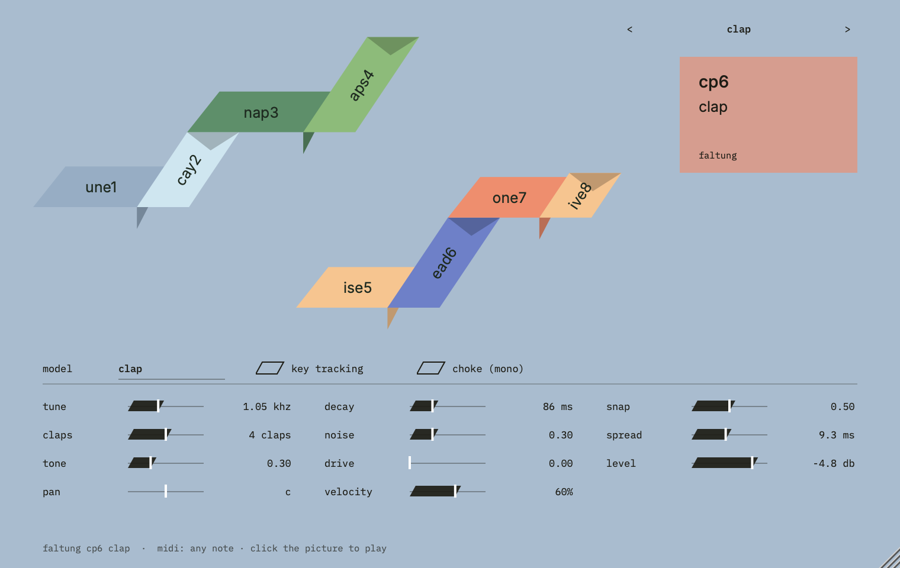
models
clap
a burst train then a tail
snap
finger snap: one burst and a resonance
room
clap with a small room
tight
two hands, short
controls
control
range
default
what it does
model
clap, snap, room, tight
snap
which engine variant (see the models above)
tune
500 hz … 3.20 khz
1.05 khz
centre of the band-pass, 500 hz – 3.2 khz
decay
30 ms … 1.00 s
206 ms
length of the tail
snap
0.00 … 1.00
0.50
bright transient on the first burst
claps
2 claps … 6 claps
4 claps
number of hands, 2–6
noise
0.00 … 1.00
0.45
a second, higher noise band
spread
4.0 ms … 26 ms
7.0 ms
time between the hands, 4–26 ms
tone
0.00 … 1.00
0.45
narrowness of the band (high = more pitched)
drive
0.00 … 1.00
0.10
saturation
level
off … 6.0 db
-4.8 db
output level, off … +6 db
pan
l 50 … r 50
c
stereo position
velocity
0% … 100%
60%
how much velocity changes level and brightness
key tracking
off / on
off
notes change the pitch (c3 = as tuned)
choke (mono)
off / on
off
a new hit cuts the previous one (mono)
presets clap · snap · room clap · tight
pc7 perc
Modal percussion: congas and bongos are membranes, bell and glass are inharmonic. With key tracking on, play it melodically.
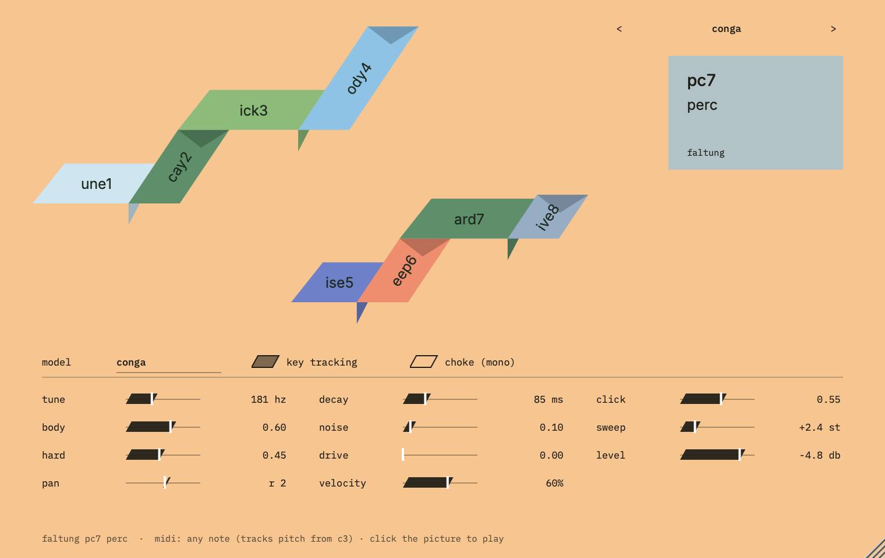
models
conga
membrane modes, low
bongo
membrane, higher and brighter
bell
inharmonic, long
glass
clear, high, inharmonic
controls
control
range
default
what it does
model
conga, bongo, bell, glass
conga
which engine variant (see the models above)
tune
60.0 hz … 1.40 khz
212 hz
fundamental, 60 hz – 1.4 khz
decay
20 ms … 2.50 s
85 ms
ring time
click
0.00 … 1.00
0.50
level of the strike
body
0.00 … 1.00
0.50
energy in the fundamental
noise
0.00 … 1.00
0.30
noise around the third mode
sweep
+0.0 st … +12.0 st
+5.4 st
membrane pitch glide after the hit
hard
0.00 … 1.00
0.30
mallet hardness
drive
0.00 … 1.00
0.00
saturation
level
off … 6.0 db
-4.8 db
output level, off … +6 db
pan
l 50 … r 50
r 2
stereo position
velocity
0% … 100%
60%
how much velocity changes level and brightness
key tracking
off / on
on
notes change the pitch (c3 = as tuned)
choke (mono)
off / on
off
a new hit cuts the previous one (mono)
presets conga · bongo · bell · glass
cl8 click
The smallest sounds: ticks, pops, crackle. Put it on 16ths at low level with probability and microtiming for the "micro" in microhouse.
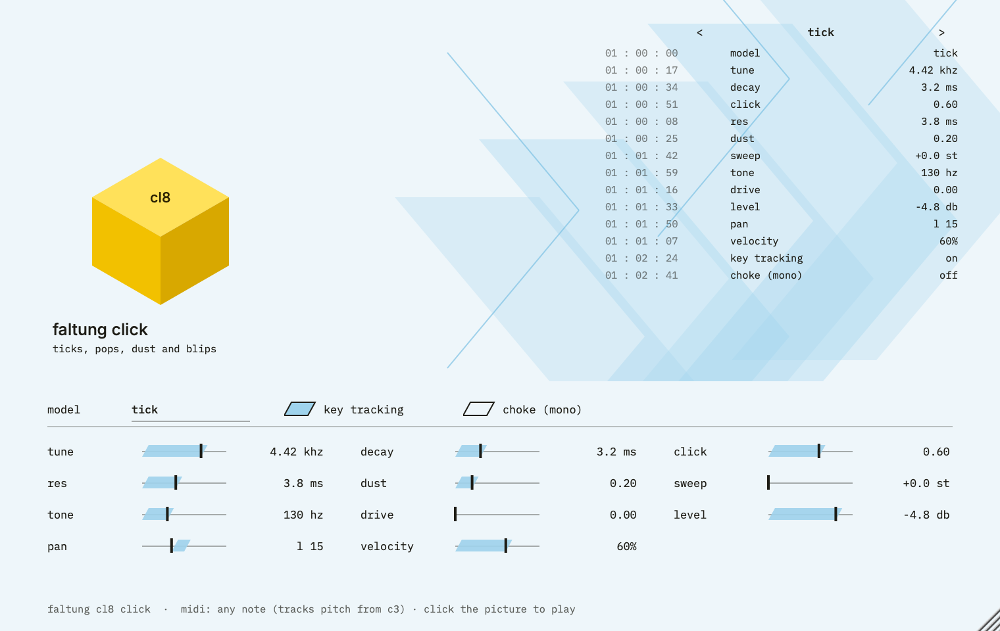
models
tick
an impulse into a resonance
pop
one windowed sine cycle
dust
random sparse impulses — vinyl crackle
blip
a sine with a very fast pitch drop
controls
control
range
default
what it does
model
tick, pop, dust, blip
tick
which engine variant (see the models above)
tune
300 hz … 14.0 khz
1.15 khz
frequency of the click, 300 hz – 14 khz
decay
0.8 ms … 80 ms
3.2 ms
overall length, 0.8–80 ms
click
0.00 … 1.00
0.55
the raw impulse
res
0.8 ms … 40 ms
8.4 ms
ring of the resonance
dust
0.00 … 1.00
0.10
density of crackle (and noise)
sweep
+0.0 st … +48.0 st
+9.6 st
pitch fall (for blips)
tone
30.0 hz … 4.00 khz
271 hz
high-pass that thins the click
drive
0.00 … 1.00
0.00
saturation
level
off … 6.0 db
-4.8 db
output level, off … +6 db
pan
l 50 … r 50
l 15
stereo position
velocity
0% … 100%
60%
how much velocity changes level and brightness
key tracking
off / on
on
notes change the pitch (c3 = as tuned)
choke (mono)
off / on
off
a new hit cuts the previous one (mono)
presets tick · pop · dust · blip
tm9 tom
Toms and the minimal blip — blip with sweep 0.55 is the short descending sine of a thousand Romanian tracks.
Six stereo effects. All tempo-related settings follow the host; with the host stopped they free-run at its tempo.
mc3 micro
Live micro-sampling of whatever passes through it. On every step of a host-synced grid it may repeat the last slice (cut), scatter grains from the last two seconds (grain), or turn the input into tiny clicks (click).
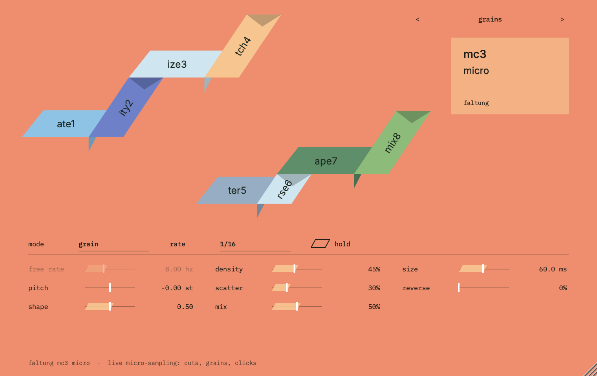
controls
control
range
default
what it does
mode
cut, grain, click
grain
cut: repeats the latest slice of input for the coming step · grain: scattered grains from the recent past · click: very short grains, several per step
A dub echo with the filters, saturation and wow inside the feedback loop, so every repeat is darker, thinner and wobblier than the last. Push feedback past 100% and the loop saturates rather than exploding. Freeze holds the loop forever.
An eight-line feedback delay network with early reflections — dense, smooth, no metallic ring — in four spaces, with a gate that shuts the tail when the input stops.
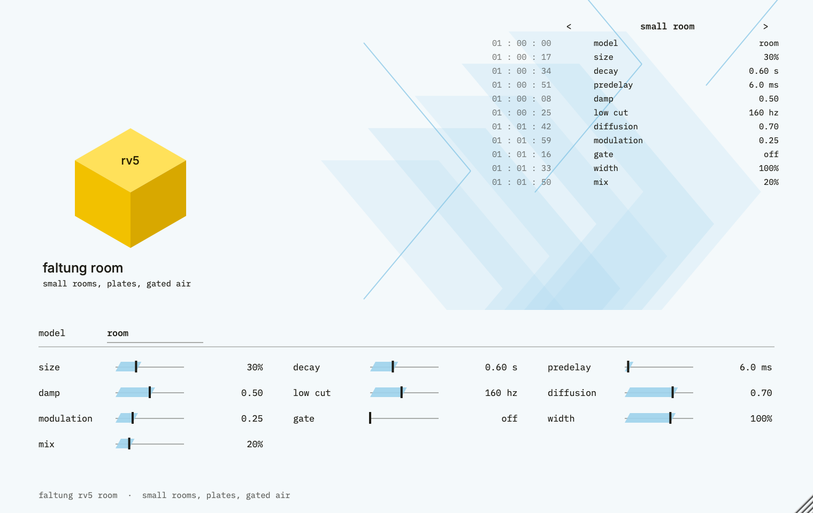
controls
control
range
default
what it does
model
room, plate, air, chamber
room
room · plate (denser, no early reflections) · air (tiny, bright) · chamber (large)
size
0% … 100%
35%
size of the space
decay
0.10 s … 8.00 s
0.70 s
time to fall 60 db
predelay
0.0 ms … 120.0 ms
6.0 ms
gap before the reverb
damp
0.00 … 1.00
0.50
high frequencies die faster
low cut
20.0 hz … 1.00 khz
160 hz
high-pass on the reverb input
diffusion
0.00 … 1.00
0.70
how quickly echoes smear into a wash
modulation
0.00 … 1.00
0.25
slow movement in the tail (chorus-like, removes ringing)
gate
off … -12 db
off
closes the tail when the input stops; the value is the threshold
width
0% … 150%
100%
stereo width of the tail
mix
0% … 100%
22%
dry / reverb balance
using it
air with gate 50% on snares and claps: the short bright room of 2000s minimal.
Low cut 300 hz keeps the reverb off the kick.
presets small room · plate · gated air · chamber
sw6 swing
A groove box for audio. Each 16th of the incoming audio is read from a delay line with its own offset, with crossfades placed just before the grid where drums are quiet. Templates, sixteen step offsets, humanize, accents, and learn: play a loop and sw6 measures where its hits fall.
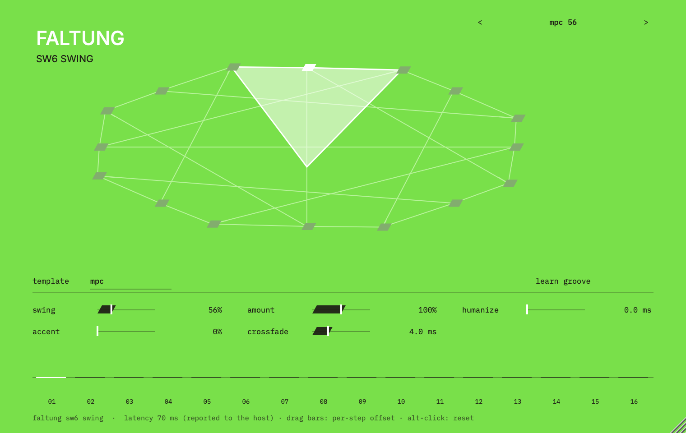
controls
control
range
default
what it does
template
straight, mpc, shuffle, push, drag, drunk
shuffle
straight · mpc (swung offbeats) · shuffle (swung, 2 and 4 laid back) · push (offbeats early) · drag (everything but the downbeats late) · drunk (random)
swing
50% … 75%
56%
amount of offbeat swing used by the templates
amount
0% … 200%
100%
scales the whole groove, 0–200%
humanize
0.0 ms … 15.0 ms
0.0 ms
random timing per step, in ms
accent
0% … 100%
0%
level accents that come with each template
crossfade
1.0 ms … 12.0 ms
4.0 ms
length of the crossfade where a step switches its delay
step 1
-50% … +50%
0%
offset for this 16th, in % of a 16th (positive = later)
step 16
-50% … +50%
0%
offset for this 16th, in % of a 16th (positive = later)
step 2 … step 15 work the same way as step 1 and step 16. In the editor they are the sixteen bars at the bottom: drag a bar up (later) or down (earlier), alt-click to reset.
using it
Put sw6 on a straight drum loop; template shuffle, swing 58%, accent 50%.
learn groove: click it, play a loop with the feel you want for a few bars, click again. The steps now hold that feel; apply it to other tracks.
sw6 delays its output by 70 ms; the host compensates automatically.
presets mpc 56 · shuffle · push · drag · drunk
fl7 filter
A DJ isolator: three Linkwitz-Riley bands that sum flat, each with a kill, plus the one-knob filter — low-pass to the left, high-pass to the right — with resonance, drive and a synced lfo.
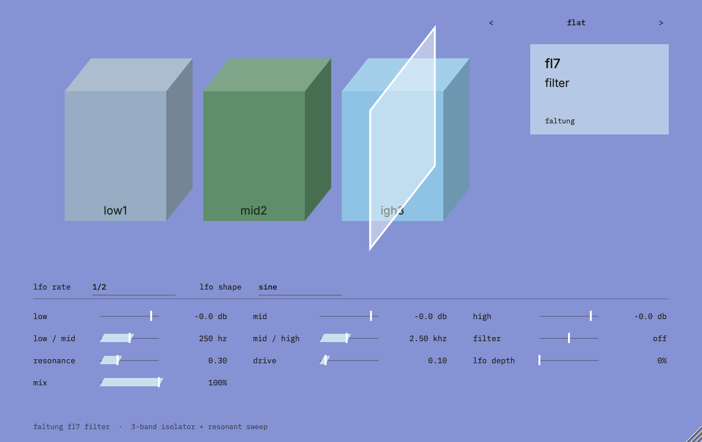
controls
control
range
default
what it does
low
kill … +6.0 db
-0.0 db
low band level; at the bottom it is a kill
mid
kill … +6.0 db
-0.0 db
mid band level
high
kill … +6.0 db
-0.0 db
high band level
low / mid
40.0 hz … 1.20 khz
250 hz
crossover between low and mid
mid / high
600 hz … 14.0 khz
2.50 khz
crossover between mid and high
filter
lp 45.0 hz … hp 12.0 khz
off
one-knob filter: left = low-pass closing, centre = off, right = high-pass opening
A bus compressor with a program-dependent release and a sidechain high-pass, followed by tape: bias, head bump and high-frequency loss. Mix it in parallel for drum crush.
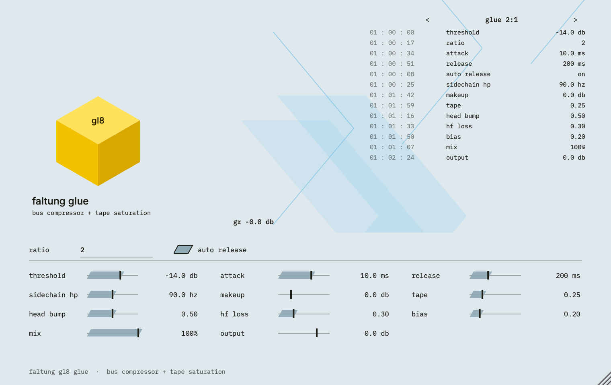
controls
control
range
default
what it does
threshold
-40.0 db … 0.0 db
-14.0 db
level where compression starts
ratio
1.5, 2, 4, 10
2
1.5, 2, 4 or 10 to 1
attack
0.10 ms … 30.0 ms
10.0 ms
how fast it clamps down
release
50 ms … 1200 ms
200 ms
how fast it lets go (when auto is off)
auto release
off / on
on
program-dependent release: fast on transients, slow on sustained material
sidechain hp
20.0 hz … 300 hz
90.0 hz
high-pass on the detector so the kick does not pump everything
makeup
-6.0 db … +18.0 db
0.0 db
gain after compression
tape
0.00 … 1.00
0.25
tape saturation amount
head bump
0.00 … 1.00
0.50
low head-bump that comes with the tape
hf loss
0.00 … 1.00
0.30
high-frequency loss of the tape
bias
0.00 … 1.00
0.20
asymmetry: adds even harmonics
mix
0% … 100%
100%
parallel compression: dry / processed
output
-18.0 db … +6.0 db
0.0 db
output level
using it
On the drum bus: ratio 2, attack 10 ms, auto release, 2–3 db of reduction, tape 0.25.
A dubstep and neuro bass synth after the DMZ and Hench era (Skream, Loefah, Rusko) and the neuro of Noisa, Current Value and Billain: wobbles, the formant "yoy", reese, fm growl.
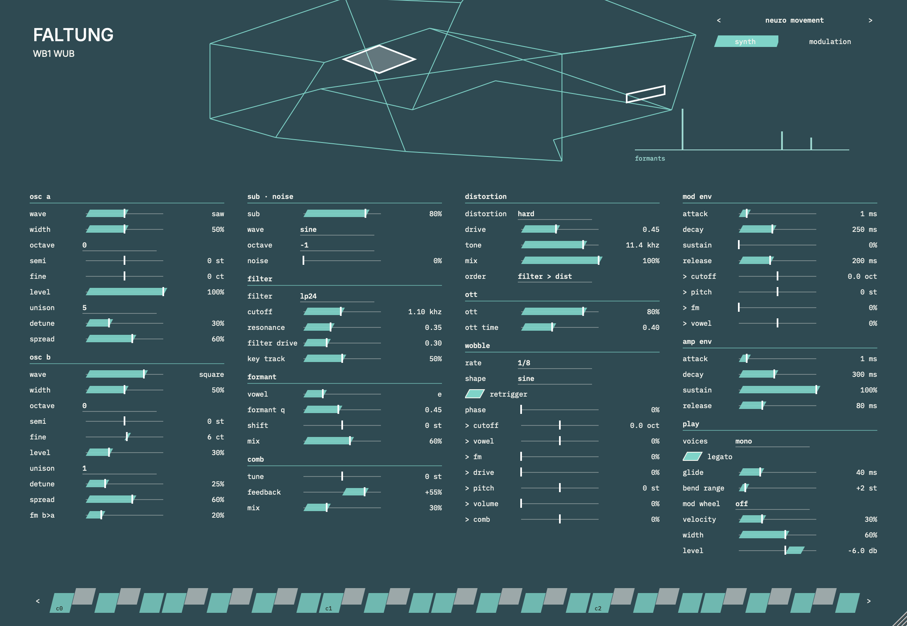
signal flow
Two oscillators (each up to seven detuned copies) and noise go through the filter and the distortion — in either order — then the formant filter
and the comb, then the amp envelope. The sub is added afterwards, clean. The voice runs at twice the sample rate, so heavy distortion and fm stay
clean, and is filtered back down with a steep half-band filter. After the voices: three-band "ott" compression, everything below 140 hz made mono,
width above, and a soft ceiling.
the wobble
The wobble lfo is locked to the host tempo. With retrigger on, each new note restarts it at phase, so every note
wobbles the same way; off, it runs with the bar. It moves seven destinations at once, each with its own depth (bipolar where it makes sense), so one
lfo can open the filter, shift the vowel and push the drive together. Shapes: sine, triangle, ramps, square, wow (opens fast, closes slowly),
yoy (a big hump then a small one — the "yoy-yoy") and random steps. With mod wheel on wobble depth the wheel plays the
wobble; on wobble rate it switches to faster divisions.
modulation
The modulation tab (top right) holds everything that moves the sound beyond the wobble.
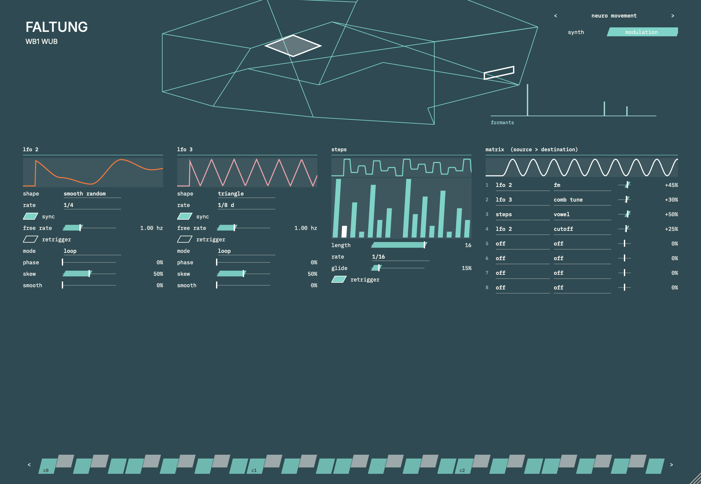
lfo 2 and lfo 3: tempo-synced from 1/64 up to 16 bars (or free in hz), with every wobble shape plus smooth random.
skew bends the shape (early or late peak), smooth rounds it off, retrigger restarts it on each note (off: it runs with
the bar), one-shot plays it once and holds the end — a ramp up over 4 bars in one-shot is a filter sweep that rises across a long note.
The scope above each lfo shows the last seven seconds.
steps: sixteen values you draw, played at a tempo division with a glide between them — the programmed wub. Length 1–16 makes
odd-length patterns against the bar.
The matrix has eight slots: a source, a destination and an amount (−100 … +100%). Sources: wobble, lfo 2, lfo 3, steps, mod env,
amp env, velocity, mod wheel, note, a random value per note, aftertouch. Destinations: cutoff (±6 octaves), resonance, vowel, formant shift,
formant mix, fm, drive, pitch (±24 st), fine pitch, volume, comb tune and feedback, the shape of either oscillator, pulse width, detune, noise,
sub, distortion mix — and the rates of the wobble, lfo 2, lfo 3 and the steps (±3 octaves), which is how the speeding-up wubs are made.
Several slots can share a source or a destination; they add.
slow sweep wob
a 1/8 wobble while lfo 2 (ramp up, 4 bars, one-shot) opens the cutoff and drive over the note
step wub
the steps play cutoff and vowel together, with glide
rate riser
lfo 2 ramps the wobble rate up two octaves over half a bar
neuro movement
smooth random on fm, a triangle on comb pitch, steps on vowel, a little random on cutoff
talking steps
an 8-step vowel pattern with long glides
pressure growl
aftertouch adds drive, the mod wheel opens the filter, velocity sets the fm
the keyboard
The keys along the bottom play wb1 in the standalone app or without a controller. Drag across them to hear glide and legato; < and > change octave.
recipes
classic wobble
osc a saw, lp24 cutoff ~200 hz, resonance 0.35, wobble sine, wob > cutoff +4.5 oct, retrigger on. Change wobble rate between notes (automate it) — 1/8 for the main line, 1/16 and 1/8 t for variations.
the yoy
formant mix 100%, wobble shape yoy, wob > vowel +100%. Add env > pitch −5 st with decay 180 ms for the downward slur.
wow
wobble shape wow at 1/4, wob > vowel +85% and wob > cutoff +2.5 oct: each cycle opens fast and closes like a mouth.
sub pressure
sub 100% sine at −1 octave, osc a sine at low level, no wobble. Keep the main oscillators above the sub with osc a +1 octave if they muddy it.
reese
osc a saw, unison 6–7, detune 40–50%, spread 80%; osc b saw −1 octave unison 4. Distortion smooth, a little comb, ott 60%. Slow wob > cutoff or nothing.
fm growl
both oscillators sine, osc b +1 octave at level 0, fm 40%, wob > fm 30% at 1/16, fold distortion, formant mix 30%, ott 60–80%.
neuro stack
start from neuro growl; route wobble to vowel, comb and drive together; then resample wb1 into kt2 loop and cut it up.
controls
control
range
default
what it does
a wave
sine … hard
saw
waveform: sine → triangle → saw → square → hard (saw × square); in-between values blend
a width
5% … 95%
50%
pulse width of the square
a octave
-3, -2, -1, 0, +1, +2, +3
0
octave
a semi
-12 st … +12 st
0 st
semitones
a fine
-100 ct … 100 ct
0 ct
cents
a level
0% … 100%
100%
output level
a unison
1, 2, 3, 4, 5, 6, 7
1
unison copies (1–7)
a detune
0% … 100%
25%
spread of the unison copies in pitch (up to ±60 cents)
a spread
0% … 100%
60%
spread of the unison copies in stereo
b wave
sine … hard
square
waveform: sine → triangle → saw → square → hard (saw × square); in-between values blend
b width
5% … 95%
50%
pulse width of the square
b octave
-3, -2, -1, 0, +1, +2, +3
0
octave
b semi
-12 st … +12 st
0 st
semitones
b fine
-100 ct … 100 ct
0 ct
cents
b level
0% … 100%
0%
output level
b unison
1, 2, 3, 4, 5, 6, 7
1
unison copies (1–7)
b detune
0% … 100%
25%
spread of the unison copies in pitch (up to ±60 cents)
b spread
0% … 100%
60%
spread of the unison copies in stereo
fm b>a
0% … 100%
0%
osc b phase-modulates osc a (set b level to 0 to hear only the result)
sub
0% … 100%
80%
clean sub level — it bypasses filter and distortion
sub wave
sine, round
sine
sine or rounded square
sub octave
-2, -1, 0
-1
sub octave relative to the note
noise
0% … 100%
0%
white noise level
filter
lp24, lp12, bp, hp, notch
lp24
lp24 · lp12 · bp · hp · notch
cutoff
20.0 hz … 20.0 khz
260 hz
filter cutoff
resonance
0.00 … 1.00
0.35
resonance
filter drive
0.00 … 1.00
0.30
drive into the filter
key track
0% … 100%
50%
cutoff follows the note
vowel
a … u
a
formant vowel a – e – i – o – u (in between = morph)
linear-phase mastering bus · mid / side · imaging · true-peak limiter
ms0 master
A mastering bus for two kinds of work: the tight, dry, wide-but-centred sound of 2000s microhouse, and dense experimental and
electroacoustic music that reaches from the lowest lows to the highest highs. The aim is not maximum loudness or maximum width but
spectral separation, depth and controlled stereo, without flattening the density that makes the music what it is.
the chain
Everything runs in mid / side. The eq and the band split are linear phase: they change level without smearing the timing of
transients or the phase between frequencies, which is why the plug-in has about 190 ms of latency (8192-tap filters at 48 khz, longer
filters at higher rates so the resolution stays the same). Ableton compensates automatically. With every stage neutral the output equals the
input to within 135 db — the test suite checks this.
a way of working
trim so the loudest peaks sit near -6 dbfs. Listen in mono once for reference.
Look at the analyser (mid blue, side orange, the input faint) — especially 150 hz – 1.5 khz, where many independent sounds pile up.
The analyser shows where to listen, not where to cut.
eq: remove what is not wanted. A high-pass only if the lows below 25 hz are not part of the music. Small cuts in the low-mids of the
mid if the centre is crowded; side-only cuts around 200 – 500 hz if the edges are muddy; a gentle side high shelf for air.
Double-click the analyser to add a band, drag it, scroll for q, right-click for type and channel.
dynamic eq for buildups that only happen sometimes (a texture that blooms at 400 hz when it gets loud).
multiband: gentle (1.3 – 2:1, 1 – 2 db of reduction) and only where the low end moves too much. Go easy on the low-mid band.
Then the widths: sub mono, low-mids slightly narrow, mids moderate, highs wider. Width and depth are different things; watch the imager and
the correlation.
saturation only for definition (a low end that should be heard on small speakers). Focus ends keeps it out of 200 hz – 2 khz.
ambience — a very quiet, filtered room — only if the mix lacks a sense of space. Often reducing competing information creates more space than adding a room.
glue 0.5 – 1.5 db, or none.
clipper (optional, 1 – 3 db) then limiter: ceiling -1 dbtp, oversampling 4× or 8×, ideally 1 – 2 db of reduction or less. Don't chase a loudness number.
Check everything with compare (level-matched): each stage must improve separation, depth or translation, or it goes. The best chain is often short.
the limiter section
Gain → clipper → limiter, both running oversampled (2×, 4× or 8×, linear-phase
half-band filters), then a short true-peak safety stage at the normal rate that catches anything the down-sampling filters add back.
The limiter never acts late: a sliding minimum plus a box-car average over the look-ahead window guarantees the gain is already down when
a peak arrives. Release is program dependent in auto (fast after short peaks, slower when it is held). Measured on a drum loop pushed
18 db into it, the output stays at -1.000 dbtp with oversampling off, 2× and 4×, and -0.999 dbtp at 8× with the clipper. A clipper before
the limiter is the usual way to get loudness with fewer audible limiter movements; keep it at 1 – 3 db.
a / b, compare and the target
a and b hold two complete settings; click to switch, copy copies the current one to the
other. compare plays the input instead (level-matched when level-matched is on). Choose a target (−14 lufs for streaming,
−9 for club …), play the whole song once so the integrated loudness is measured, then go to target sets the limiter gain to reach it.
For your music the target is often off: loudness range matters more than a number.
the imager
Click it to switch between three views. Polar sample (as in Ozone Imager): every sample is a dot; mono material
stands on the vertical line, hard left and right on the diagonals, out-of-phase material lies along the horizontal. Dots outside the
diagonals mean more side than mid. Polar level: the energy at each angle as rays. Lissajous: the classic goniometer. Below: the
correlation (+1 mono, 0 wide, below 0 phase trouble that will vanish in mono) and, for each band, the measured width (orange) against
the width you set (white mark). The same per-band width bars appear in the analyser under each band.
meters
The line under the analyser: momentary, short-term and integrated loudness (BS.1770 / EBU R128, gated), lra (loudness
range, EBU Tech 3342), the distance to the target, true peak (4× interpolated), plr (peak to loudness ratio — how much dynamic punch is
left), gain reduction of glue and limiter, and the latency. reset meters clears integrated loudness, loudness range and peak hold.
your mixes
ms0 was tuned on the ten final mixes in Sadnoise_Cloudfin_Dreamstate / final wavs, measured with its own meters:
side energy at 160 – 350 hz high in tracks 5, 8, 12
a side cut at 300 hz and a dynamic side band at 320 hz
Track 9 through dreamstate (from your mixes): -15.7 → -14.9 lufs, loudness range 12.8 → 11.4 lu, true peak +3.69 → -1.00 dbtp.
presets
transparent
only the limiter at -1 dbtp. The starting point: switch stages on one at a time and keep only those that help
microhouse club
subsonic high-pass, a little low-mid out of the centre, side mud cleared, side air, sub mono and widening above, tape saturation on the lows, light glue, +4 db into the limiter
dense experimental
no high-pass (your lows stay), mid cuts at 300 hz and 1.2 khz, side cut at 450 hz, side air, two dynamic mid bands at 400 hz and 2.8 khz, gentle bands, widths 0 / 85 / 115 / 135%, air, a very quiet room, no glue, light limiting
electroacoustic, dynamic
almost nothing: a dynamic band catching harshness around 3.5 khz, the sub narrowed, slow limiter release. Keeps the full dynamic range
wide air, deep space
side high shelf, wide top band with air, a quiet room for depth
mono-safe low end
everything under 110 hz mono, low-mids half width, side high-pass at 120 hz
loud club
firmer bands, soft-clip saturation focused on the ends, glue, +7 db into the limiter with a short lookahead
vinyl pre-master
high- and low-pass, everything under 150 hz mono, low-mids narrowed, ceiling -1.5 dbtp, no limiting gain
dreamstate (from your mixes)
made from the analysis of your ten mixes: 15 hz linear-phase high-pass, side cut at 300 hz, a little centre cut at 460 hz, side air, dynamic mid band at 250 hz and side band at 320 hz, sub mono, very gentle bands, no glue, a light soft clipper, 8× oversampled limiter at -1 dbtp with +2 db
16-bit export
transparent, with 16-bit TPDF dither and noise shaping for CD / 16-bit delivery
Presets never change listen, compare or input trim.
controls
control
range
default
what it does
input trim
-24.0 db … +24.0 db
0.0 db
input level. Aim for peaks around -6 dbfs into the chain
listen
stereo, mono, side, swap
stereo
monitoring only: stereo · mono (sum) · side (the difference) · swap (L / R). Set stereo before you bounce
compare (bypass)
off / on
off
compare: hear the input instead (delayed to match the latency)
level-matched compare
off / on
on
during compare, the input is level-matched to the output (short-term loudness), so louder never wins by default
dc filter
off / on
on
removes dc offset (a 3 hz high-pass, far below anything musical)
a loudness goal; the meter line shows how far the integrated loudness is from it
eq on
off / on
on
switch the whole linear-phase eq (stays at the same latency)
eq 1 on
off / on
off
band on
eq 1 type
bell, low shelf, high shelf, notch
low shelf
bell · low shelf · high shelf · notch
eq 1 freq
20.0 hz … 20.0 khz
40.0 hz
centre or corner frequency
eq 1 gain
-18.0 db … +18.0 db
0.0 db
boost or cut
eq 1 q
0.10 … 18.00
0.70
width: low = broad, high = narrow
eq 1 channel
stereo, mid, side
stereo
stereo (both) · mid (the centre) · side (the edges)
high-pass on
off / on
off
high-pass on
high-pass freq
10.0 hz … 500 hz
22.0 hz
high-pass corner
high-pass slope
12 db, 24 db, 48 db, 96 db
24 db
12 – 96 db / octave
high-pass channel
stereo, mid, side
stereo
which part it acts on (side = remove lows from the edges only)
low-pass on
off / on
off
low-pass on
low-pass freq
2.00 khz … 22.0 khz
20.0 khz
low-pass corner
low-pass slope
12 db, 24 db, 48 db, 96 db
24 db
12 – 96 db / octave
low-pass channel
stereo, mid, side
stereo
which part it acts on
dynamic eq on
off / on
on
switch both dynamic bands
dyn 1 on
off / on
off
band on
dyn 1 channel
stereo, mid, side
mid
stereo (both) · mid (the centre) · side (the edges)
dyn 1 freq
20.0 hz … 20.0 khz
400 hz
centre or corner frequency
dyn 1 q
0.30 … 12.00
1.40
width: low = broad, high = narrow
dyn 1 threshold
-60.0 db … 0.0 db
-30.0 db
level at which the band starts acting
dyn 1 range
-18.0 db … +12.0 db
-4.0 db
maximum cut (negative) or boost (positive)
dyn 1 attack
0.5 ms … 100 ms
10 ms
how fast it reacts
dyn 1 release
10 ms … 1000 ms
120 ms
how fast it lets go
dyn 2 on
off / on
off
band on
dyn 2 channel
stereo, mid, side
mid
stereo (both) · mid (the centre) · side (the edges)
dyn 2 freq
20.0 hz … 20.0 khz
3.00 khz
centre or corner frequency
dyn 2 q
0.30 … 12.00
1.40
width: low = broad, high = narrow
dyn 2 threshold
-60.0 db … 0.0 db
-30.0 db
level at which the band starts acting
dyn 2 range
-18.0 db … +12.0 db
-4.0 db
maximum cut (negative) or boost (positive)
dyn 2 attack
0.5 ms … 100 ms
10 ms
how fast it reacts
dyn 2 release
10 ms … 1000 ms
120 ms
how fast it lets go
multiband on
off / on
on
switch the band compression (the split and widths stay)
crossover 1
30.0 hz … 300 hz
80.0 hz
sub / low-mid crossover
crossover 2
150 hz … 2.00 khz
350 hz
low-mid / mid-high crossover
crossover 3
1.00 khz … 12.0 khz
4.00 khz
mid-high / high crossover
sub threshold
-60.0 db … 0.0 db
-18.0 db
level at which the band starts acting
sub ratio
1.00:1 … 4.00:1
1.50:1
compression ratio, keep it 1.2 – 2
sub attack
1.0 ms … 200 ms
40 ms
how fast it reacts
sub release
20 ms … 1000 ms
220 ms
how fast it lets go
sub gain
-12.0 db … +12.0 db
0.0 db
boost or cut
sub width
0% … 200%
0%
stereo width of the band: 0% mono, 100% as is, 200% doubled side
sub solo
off / on
off
hear only the soloed bands
imaging on
off / on
on
switch the per-band widths
air (top-band width)
0% … 100%
0%
adds a decorrelated copy of the top band's centre to its sides: width for mono highs, no transient smear below the top crossover
mid level
-12.0 db … +12.0 db
0.0 db
level of the centre after imaging
side level
-12.0 db … +12.0 db
0.0 db
level of the sides after imaging
saturation on
off / on
off
saturation on
saturation curve
tape, tube, soft clip, smooth
tape
tape · tube · soft clip · smooth
saturation focus
full, lows, highs, ends (avoid 200-2k)
full
where the harmonics are generated: full · lows · highs · ends (leaves 200 hz – 2 khz alone)
saturation drive
0.0 db … +18.0 db
+3.0 db
drive into the curve (level-compensated)
saturation mix
0% … 100%
100%
parallel: dry / saturated
ambience on
off / on
off
ambience on
ambience level
-60.0 db … -6.0 db
-30.0 db
level of the parallel room, keep it very quiet
ambience size
0% … 100%
30%
room size
ambience decay
0.10 s … 3.00 s
0.60 s
tail length
ambience high-pass
40.0 hz … 1.00 khz
300 hz
high-pass on the room
ambience low-pass
2.00 khz … 20.0 khz
10.0 khz
low-pass on the room
ambience width
0% … 150%
100%
stereo width of the room
glue on
off / on
on
glue on
glue threshold
-40.0 db … 0.0 db
-16.0 db
threshold
glue ratio
1.00:1 … 4.00:1
2.00:1
ratio
glue attack
0.1 ms … 50 ms
20 ms
attack
glue release
50 ms … 1200 ms
150 ms
release
glue auto release
off / on
on
program-dependent release
glue makeup
-6.0 db … +12.0 db
+0.0 db
makeup gain
glue mix
0% … 100%
100%
parallel mix
clipper on
off / on
off
clipper on
clipper drive
0.0 db … +12.0 db
+1.0 db
gain into the clipper; it clips at the ceiling, the limiter catches the rest
clipper softness
0% … 100%
50%
0% hard clip … 100% very soft knee
limiter on
off / on
on
limiter on
limiter oversampling
off, 2x, 4x, 8x
4x
off · 2x · 4x · 8x: the clipper and limiter run at this rate, so peaks between samples are caught where they happen and the clipping does not alias. Latency does not change between settings
limiter stereo link
0% … 100%
100%
100% both channels share one gain (stable image); lower lets each side limit on its own
limiter gain
0.0 db … +18.0 db
0.0 db
drive into the limiter
ceiling (true peak)
-6.0 dbtp … 0.0 dbtp
-1.0 dbtp
maximum true peak (inter-sample peaks included)
limiter release
10 ms … 1000 ms
120 ms
release
limiter auto release
off / on
on
fast release after short peaks, slower when held
limiter lookahead
0.5 ms … 5.0 ms
3.0 ms
attack window (latency stays fixed at 5 ms)
output
-24.0 db … +6.0 db
+0.0 db
output level (before dither)
dither
off, 24 bit, 16 bit
off
TPDF dither for 24 or 16 bit export; off for 32-bit float
noise shaping
off / on
off
first-order noise shaping (pushes dither noise up in frequency)
eq bands 2 – 8 work like band 1 and multiband bands 2 – 4 like the sub band; every one of them is its own automatable parameter
(eq 5 gain, high width …).
export
Bounce at the project's sample rate as 24-bit (dither 24) or 32-bit float (dither off). For 16-bit delivery, set dither to 16 bit;
nothing after ms0 should change the level.
Automate pattern between a1 and a2 every 16 bars, and pc7 probability slowly up.
the dub chain
kt1 → rm3 on its own output → dl4 (3/16, feedback 60%, age 0.4, send automated) → rv5 air with gate. Main mix → gl8.
cut-up from your own loop
Resample a bar of kt1 (or anything) and drop it into kt2; onsets mode, 16 slices; load preset cut-up; put mc3 after it in click mode.
groove transplant
Put sw6 on a loop with the feel you want, learn groove for four bars, save the preset with your set, then put the same sw6 settings on straight tracks.
a 2000s dubstep bassline
wb1 preset sub wob, notes G0–D1 at 140 bpm. Automate wobble rate: 1/8 for two notes, 1/16 for one, 1/8 t for the last. Halfstep kick and snare from bd1 and cp6.
neuro
wb1 preset neuro growl or reese; resample several notes, cut them in kt2 with 32 slices, then gl8 with ratio 10 in parallel.
technical notes
Sample rates 44.1–192 khz; all processing in 32-bit float. Stereo throughout; kt1 has 9 stereo outputs.
Latency: none, except sw6 — 70 ms, reported to the host for automatic compensation.
wb1: 2× oversampled voice, 63-tap Kaiser half-band decimator, polyBLEP unison oscillators, phase modulation, 3-band ott with Linkwitz-Riley crossovers.
rv5: 8-line feedback delay network, Hadamard mixing, modulated lines, early-reflection taps. dl4: Hermite-interpolated tape lines with glide on time changes.
Every plug-in passes Apple's AU validation and an offline test that renders every preset and checks for silence, overload, non-finite output and state recall.
Source: ~/faltung. Build with CMake and JUCE; faltungTest renders and checks all plug-ins. Licence AGPL-3.0. Fonts: Inter and IBM Plex Mono (SIL Open Font License).